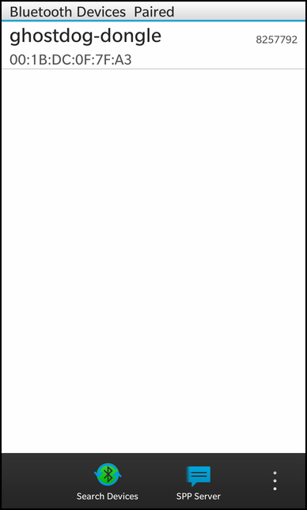
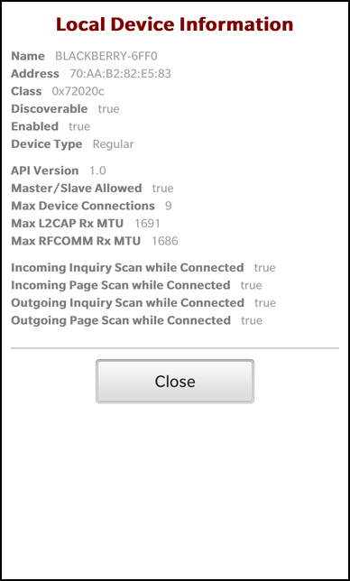
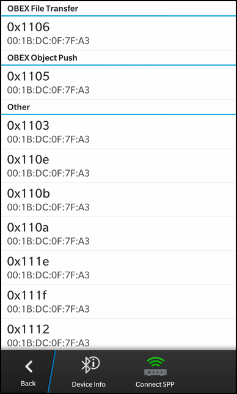
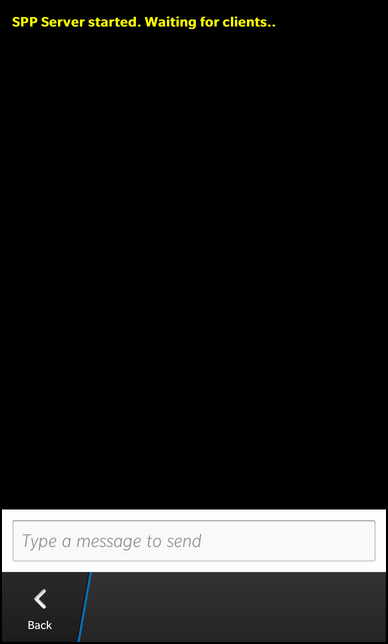

Bluetooth SPP Chat Example
Files:
- bluetoothsppchat/assets/LabelLabel.qml
- bluetoothsppchat/assets/LocalDeviceInfoSheet.qml
- bluetoothsppchat/assets/RemoteDevice.qml
- bluetoothsppchat/assets/RemoteDeviceInfoSheet.qml
- bluetoothsppchat/assets/SPPChat.qml
- bluetoothsppchat/assets/main.qml
- bluetoothsppchat/src/BTController.cpp
- bluetoothsppchat/src/BTController.hpp
- bluetoothsppchat/src/ChatManager.cpp
- bluetoothsppchat/src/ChatManager.hpp
- bluetoothsppchat/src/DeviceListing.cpp
- bluetoothsppchat/src/DeviceListing.hpp
- bluetoothsppchat/src/LocalDeviceInfo.cpp
- bluetoothsppchat/src/LocalDeviceInfo.hpp
- bluetoothsppchat/src/RemoteDeviceInfo.cpp
- bluetoothsppchat/src/RemoteDeviceInfo.hpp
- bluetoothsppchat/src/main.cpp
- bluetoothsppchat/bluetoothsppchat.pro
- bluetoothsppchat/translations/bluetoothsppchat.pro
Description
The Bluetooth SPP Chat example demonstrates how to use the Bluetooth functionality as provided by the BB10 platform. The user can retrieve the information about the Bluetooth adaptor of the local device, list all paired and discovered remote devices, view the services provided by the remote devices and start a chat session via SPP with them.

Overview
In this example we'll learn how to use the Bluetooth API of the BB10 platform. The different responsibilities (local device information, remote device listing, remote device information and chat) have been implemented in separated classes, so that it's easier to get an overview how to use them. The BTController class is the central class which initializes the connection to the Bluetooth service and provides some global functionality. The LocalDeviceInfo class and RemoteDeviceInfo class make information about the local and remote Bluetooth adapters available to the UI. The DeviceListing class encapsulates the listing of paired and discovered Bluetooth devices and the ChatManager contains all the code that is needed to implement a simple chat between two Bluetooth devices based on the Serial Port Profile (SPP).
The BTController is exported to QML under the name '_btController' and the other business logic objects are accessible through its properties.
The UI
The UI of this sample application consists of the NavigationPane with a couple of Sheets and Pages.
The main page
After startup the main page (implemented in main.qml) is shown, which contains a ListView with all paired and discovered remote devices. The action bar of the page contains 5 action items.
actions: [ ActionItem { title: qsTr("Search Devices") imageSource: "asset:///images/device_discovery.png" ActionBar.placement: ActionBarPlacement.OnBar onTriggered: { _btController.deviceListing.discover(); } }, ActionItem { title: _btController.bluetoothActive ? qsTr("Bluetooth: ON") : qsTr("Bluetooth: OFF") imageSource: _btController.bluetoothActive ? "asset:///images/on.png" : "asset:///images/off.png" onTriggered: { _btController.toggleBluetoothActive() } }, ActionItem { title: _btController.discoverableActive ? qsTr("Discoverable: ON") : qsTr("Discoverable: OFF") imageSource: _btController.discoverableActive ? "asset:///images/discoverable_on.png" : "asset:///images/discoverable_off.png" onTriggered: { _btController.toggleDiscoverableActive() } }, ActionItem { title: qsTr("Local Device") imageSource: "asset:///images/local_device.png" onTriggered: { qsLocalDeviceInfo.open(); } }, ActionItem { title: qsTr("SPP Server") imageSource: "asset:///images/send.png" ActionBar.placement: ActionBarPlacement.OnBar onTriggered: { _btController.chatManager.startSPPServer() navigationPane.push(chatPage.createObject()) } } ]
The first action invokes the discover() method of the DeviceListing object. This will trigger a discover operation for other Bluetooth devices around.
The second action shows whether the bluetooth functionality of the device is currently active or inactive by binding the 'text' and 'imageSource' properties depending on the value of BTController's 'bluetoothActive' property. If the user triggers this action, it will toggle the bluetooth activity.
The third action shows whether the device is currently discoverable by other Bluetooth devices. If the user triggers this action, it will toggle the discoverable status of the device.
The fourth action opens a Sheet that displays Bluetooth-specific information about the local device.
The fifth action starts a local SPP server through the ChatManager object and pushes a new page, which provides input/output fields for the user to send/receive messages, on the NavigationPane.
The Local Device Information Sheet

The Local Device Information sheet displays the Bluetooth-specific information of the local device. It contains a list of LabelLabel objects, which are formatted key/value pairs. Their keys are hardcoded and their values are bound against the associated properties of the LocalDeviceInfo object.
LabelLabel { label: qsTr("Name") text: _btController.localDeviceInfo.name } LabelLabel { label: qsTr("Address") text: _btController.localDeviceInfo.address }
The Remote Device Page
The ListView on the main page uses the 'model' property of the DeviceListing object as data model and shows the name and address of each device.
ListView { dataModel: _btController.deviceListing.model listItemComponents: [ ListItemComponent { type: "listItem" StandardListItem { title: ListItemData.deviceName description: ListItemData.deviceAddress status: ListItemData.deviceClass } } ] onTriggered: { var selectedItem = dataModel.data(indexPath); _btController.setRemoteDevice(selectedItem.deviceAddress); navigationPane.push(remoteDevicePage.createObject()) } function itemType(data, indexPath) { if (indexPath.length == 1) { // If the index path contains a single integer, the item // is a "header" type item return "header"; } else { // If the index path contains more than one integer, the // item is a "listItem" type item return "listItem"; } } }
Whenever the user clicks on one of the items, the setRemoteDevice() method is invoked on the BTController object to set the Bluetooth address of the selected device and the Remote Device page is pushed on the NavigationPane.

This page contains a ListView that lists all service profiles provided by the remote device.
ListView { dataModel: _btController.remoteDeviceInfo.model listItemComponents: [ ListItemComponent { type: "listItem" StandardListItem { title: ListItemData.uuid description: ListItemData.address } } ] function itemType(data, indexPath) { if (indexPath.length == 1) { // If the index path contains a single integer, the item // is a "header" type item return "header"; } else { // If the index path contains more than one integer, the // item is a "listItem" type item return "listItem"; } } }
As data model it uses the 'model' property of the RemoteDeviceInfo object, which provides the UUID of the service profile and the Bluetooth address for each entry.
Additionally the Remote Device page contains two action items in the action bar:
actions: [ ActionItem { title: qsTr("Device Info") imageSource: "asset:///images/local_device.png" ActionBar.placement: ActionBarPlacement.OnBar onTriggered: { qsDeviceInfo.open(); } }, ActionItem { title: qsTr("Connect SPP") imageSource: "asset:///images/broadcasts.png" ActionBar.placement: ActionBarPlacement.OnBar onTriggered: { _btController.chatManager.connectToSPPService(); navigationPane.push(chatPage.createObject()) } } ]
If the user selects the first action, the Remote Device Info sheet is opened, which shows Bluetooth-specific information about the currently selected device. If the user selects the second action, a connection to the SPP service of the selected remote device is established through the ChatManager object. Afterwards the UI for sending and receiving chat messages is pushed on the NavigationPane.
The Remote Device Information Sheet

The Remote Device Information sheet displays the Bluetooth-specific information of the currently selected remote device. It contains a list of LabelLabel objects, which are formatted key/value pairs. Their keys are hardcoded and their values are bound against the associated properties of the RemoteDeviceInfo object.
LabelLabel { label: qsTr("Address") text: _btController.remoteDeviceInfo.address } LabelLabel { label: qsTr("Class") text: _btController.remoteDeviceInfo.deviceClass }
The Chat Page
If the user triggers the 'SPP Server' action from the main page or the 'Connect SPP' action from the Remote Device page, a local SPP server is started resp. a connection to a remote SPP server is established and the Chat page is pushed on the NavigationPane.

This page contains the controls that are used to send messages and display received messages. The UI is the same for server and client mode, the different handling of messages in both modes is encapsulated inside the ChatManager object.
TextArea { textStyle { base: SystemDefaults.TextStyles.SubtitleText fontWeight: FontWeight.Bold color: Color.Yellow } backgroundVisible: true editable: false text: _btController.chatManager.chatHistory }
A TextArea is used to display all messages that has been received and sent so far. It's 'text' property is bound against the 'chatHistory' property of the ChatManager, so its content will be updated automatically whenever new messages have been sent or received.
TextField { id: textInput layoutProperties: StackLayoutProperties { spaceQuota: .9 } hintText: qsTr("Type a message to send") inputMode: TextAreaInputMode.Chat input { submitKey: SubmitKey.Send } onTextChanged: { if (text.length > 0) { _btController.chatManager.sendSPPMessage(text); textInput.text = "" } } }
Below the TextArea is a TextField that is used to type in the message and send it to the peer. Whenever the field looses focus or the user clicks the 'Send' key on the keyboard, the sendSPPMessage() method of the ChatManager object is invoked with the current text as parameter and afterwards the TextField is cleared.
paneProperties: NavigationPaneProperties { backButton: ActionItem { onTriggered: { _btController.chatManager.closeSPPConnection() navigationPane.pop(); } } }
Since we want to close the SPP session (in server and client mode) when the user leaves the Chat page, we provide our own back button action for the Chat page. Whenever the action is triggered, we terminate the session by invoking closeSPPConnection() on the ChatManager and we remove the page from the NavigationPane.
The BTController class
The BTController class is the central class in this application. It initializes the connection to the Bluetooth service and provides a high-level API (properties, signals and slots) to retrieve Bluetooth-specific information for the UI or modify the state of the Bluetooth stack.
class BTController : public QObject { Q_OBJECT // Properties to access various bluetooth functionality Q_PROPERTY(ChatManager* chatManager READ chatManager CONSTANT) Q_PROPERTY(DeviceListing* deviceListing READ deviceListing CONSTANT) Q_PROPERTY(LocalDeviceInfo* localDeviceInfo READ localDeviceInfo CONSTANT) Q_PROPERTY(RemoteDeviceInfo* remoteDeviceInfo READ remoteDeviceInfo CONSTANT) Q_PROPERTY(bool bluetoothActive READ bluetoothActive NOTIFY bluetoothActiveChanged) Q_PROPERTY(bool discoverableActive READ discoverableActive NOTIFY discoverableActiveChanged) public: /** * Creates a new BTController object. * * @param parent The parent object. */ BTController(QObject* parent); // Destroys the BTController object virtual ~BTController(); // A helper method used for integration with bluetooth low-level C API void emitBTDeviceSignal(int event, const QString &btAddr, const QString &eventData); public Q_SLOTS: // This slot is invoked to switch the local bluetooth functionality on/off void toggleBluetoothActive(); // This slot is invoked to change whether the bluetooth device is discoverable or not void toggleDiscoverableActive(); // This slot is invoked to set the address of the remote device the user has selected in the UI void setRemoteDevice(const QString &address); Q_SIGNALS: // A helper signal used for integration with bluetooth low-level C API void BTDeviceSignal(int event, const QString &btAddr, const QString &eventData); // The change notification signals of the properties void bluetoothActiveChanged(); void discoverableActiveChanged(); private Q_SLOTS: // A helper slot used for integration with bluetooth low-level C API void handleBTDeviceEvent(int event, const QString &btAddr, const QString &eventData); private: // A helper method to log data to stdout void logQString(const QString &msg); // The accessor methods for the properties bool bluetoothActive() const; bool discoverableActive() const; ChatManager* chatManager() const; DeviceListing* deviceListing() const; LocalDeviceInfo* localDeviceInfo() const; RemoteDeviceInfo* remoteDeviceInfo() const; // The property values ChatManager* m_chatManager; DeviceListing* m_deviceListing; LocalDeviceInfo* m_localDeviceInfo; RemoteDeviceInfo* m_remoteDeviceInfo; };
The two properties 'bluetoothActive' and 'discoverableActive' are used to determine whether Bluetooth is currently enabled on the device and whether the device is discoverable to other Bluetooth devices. The remaining four properties provide access to other business logic object that encapsulate a certain task.
Since the BB10 platform currently only provides a C API for the Bluetooth service that uses callbacks for asynchronous communication, we need a global static pointer to our BTController object, so that we can access it from within the callback method.
static BTController *s_btController = 0;
Inside the callback method we access the BTController object and invoke its emitBTDeviceSignal method. All further handling of the events is then done inside the BTController object.
void BTControllerCallback(const int event, const char *bt_addr, const char *event_data) { if (s_btController) { s_btController->emitBTDeviceSignal(event, bt_addr, event_data); } }
Inside the constructor the other business logic objects are instantiated with the BTController as parent object to ensure proper memory management. Afterwards the connection to the Bluetooth service is initialized by using the C API of the BB10 platform. Here we pass the callback method that will be invoked whenever the Bluetooth stack send status change events. In a last step we trigger the DeviceListing and LocalDeviceInfo object to update their internal data from the Bluetooth service.
BTController::BTController(QObject* parent) : QObject(parent) , m_chatManager(new ChatManager(this)) , m_deviceListing(new DeviceListing(this)) , m_localDeviceInfo(new LocalDeviceInfo(this)) , m_remoteDeviceInfo(new RemoteDeviceInfo(this)) { s_btController = this; connect(this, SIGNAL(BTDeviceSignal(int, QString, QString)), this, SLOT(handleBTDeviceEvent(int, QString, QString))); // Initialize the btdevice and SPP library APIs. bt_device_init(BTControllerCallback); bt_spp_init(); // Initialize the list of paired and found devices, but do not run a Bluetooth search. m_deviceListing->update(); // Initialize the local device information m_localDeviceInfo->update(); }
The destructor closes the connection to the Bluetooth service and resets the global pointer, so that pending callbacks won't access the destructed object.
BTController::~BTController() { // De-initialize the btdevice library. bt_device_deinit(); // De-initialize the library. bt_spp_deinit(); s_btController = 0; }
The emitBTDeviceSignal() method is invoked from the registered callback. Inside this method we simply emit a signal which has been bound against the handleBTDeviceEvent() slot in the constructor.
void BTController::emitBTDeviceSignal(int event, const QString &btAddr, const QString &eventData) { emit BTDeviceSignal(event, btAddr, eventData); }
The handleBTDeviceEvent() slot is therefor invoked whenever the Bluetooth service signals some state change. We check the type of the event and emit the change notification signals for the 'bluetoothActive' and 'discoverableActive' properties in case that Bluetooth has been activated/deactivated on the device or the discoverable status has changed. For all other events we print a message to the stdout channel.
void BTController::handleBTDeviceEvent(int event, const QString &btAddr, const QString &eventData) { switch (event) { case BT_EVT_RADIO_SHUTDOWN: case BT_EVT_RADIO_INIT: case BT_EVT_ACCESS_CHANGED: emit bluetoothActiveChanged(); emit discoverableActiveChanged(); m_localDeviceInfo->update(); break; default: logQString("Unknown event " + QString::number(event) + "/" + btAddr); break; } }
The accessor methods of the 'bluetoothActive' and 'discoverableActive' properties are implemented by calling the corresponding C API.
bool BTController::bluetoothActive() const { return bt_ldev_get_power(); } bool BTController::discoverableActive() const { return (bt_ldev_get_discoverable() == BT_DISCOVERABLE_GIAC); }
If the user toggles the Bluetooth activity or discoverability via the action items in the UI, toggleBluetoothActive() resp. toggleDiscoverableActive() are invoked. These methods also use the low-level C API to trigger these changes in the Bluetooth service.
void BTController::toggleBluetoothActive() { bt_ldev_set_power(!bt_ldev_get_power()); emit bluetoothActiveChanged(); } void BTController::toggleDiscoverableActive() { // If discoverable mode is GIAC, then we are discoverable - change to connectable (but not discoverable), and vice-versa. if (bt_ldev_get_discoverable() == BT_DISCOVERABLE_GIAC) { bt_ldev_set_discoverable(BT_DISCOVERABLE_CONNECTABLE); } else { bt_ldev_set_discoverable(BT_DISCOVERABLE_GIAC); } emit discoverableActiveChanged(); }
When the user selects a paired or discovered device in the ListView of the main page, the setRemoteDevice() method is invoked, which passes the Bluetooth address through to the ChatManager and RemoteDeviceInfo objects. There the address is needed as input parameter for the C API.
void BTController::setRemoteDevice(const QString &address) { logQString(address); // Update the remote address on the helper objects m_chatManager->setRemoteAddress(address); m_remoteDeviceInfo->update(address); }
The LocalDeviceInfo class
The LocalDeviceInfo class encapsulates the C API to retrieve information about the local device and provides these information through properties to the UI.
class LocalDeviceInfo : public QObject { Q_OBJECT // The information of the local device as properties Q_PROPERTY(QString name READ name NOTIFY changed) Q_PROPERTY(QString address READ address NOTIFY changed) Q_PROPERTY(QString deviceClass READ deviceClass NOTIFY changed) Q_PROPERTY(QString discoverable READ discoverable NOTIFY changed) Q_PROPERTY(QString enabled READ enabled NOTIFY changed) Q_PROPERTY(QString deviceType READ deviceType NOTIFY changed) Q_PROPERTY(QString apiVersion READ apiVersion NOTIFY changed) Q_PROPERTY(QString masterSlaveAllowed READ masterSlaveAllowed NOTIFY changed) Q_PROPERTY(QString maximumConnections READ maximumConnections NOTIFY changed) Q_PROPERTY(QString maximumL2capMtu READ maximumL2capMtu NOTIFY changed) Q_PROPERTY(QString maximumRfcommMtu READ maximumRfcommMtu NOTIFY changed) Q_PROPERTY(QString incomingInquiryScan READ incomingInquiryScan NOTIFY changed) Q_PROPERTY(QString incomingPageScan READ incomingPageScan NOTIFY changed) Q_PROPERTY(QString outgoingInquiryScan READ outgoingInquiryScan NOTIFY changed) Q_PROPERTY(QString outgoingPageScan READ outgoingPageScan NOTIFY changed) public: // Creates a new LocalDeviceInfo object LocalDeviceInfo(QObject *parent = 0); // Updates the properties of the object void update(); Q_SIGNALS: // The change notification signal void changed(); private: // The accessor methods of the properties QString name() const; QString address() const; QString deviceClass() const; QString discoverable() const; QString enabled() const; QString deviceType() const; QString apiVersion() const; QString masterSlaveAllowed() const; QString maximumConnections() const; QString maximumL2capMtu() const; QString maximumRfcommMtu() const; QString incomingInquiryScan() const; QString incomingPageScan() const; QString outgoingInquiryScan() const; QString outgoingPageScan() const; // The property values QString m_name; QString m_address; QString m_deviceClass; QString m_discoverable; QString m_enabled; QString m_deviceType; QString m_apiVersion; QString m_masterSlaveAllowed; QString m_maximumConnections; QString m_maximumL2capMtu; QString m_maximumRfcommMtu; QString m_incomingInquiryScan; QString m_incomingPageScan; QString m_outgoingInquiryScan; QString m_outgoingPageScan; };
The update() method is invoked by the BTController whenever the Bluetooth service signals a state change. Inside this method the C API functions are used to retrieve the textual or numerical values from the service and store them in the properties. At the end the 'changed' signal is emitted to let the UI update the content of the associated labels.
void LocalDeviceInfo::update() { char buffer[128]; const int bufferSize = sizeof(buffer); bool ok = false; const QString unknown = tr("Unknown"); const QString notAvailable = tr("N/A"); ok = (bt_ldev_get_friendly_name(buffer, bufferSize) == 0); m_name = (ok ? QString::fromLatin1(buffer) : unknown); ok = (bt_ldev_get_address(buffer) == 0); m_address = (ok ? QString::fromLatin1(buffer) : unknown); const int code = bt_ldev_get_device_class(BT_COD_DEVICECLASS); if (code >= 0) { m_deviceClass.sprintf("0x%x", code); } else { m_deviceClass = unknown; } m_discoverable = ((bt_ldev_get_discoverable() == BT_DISCOVERABLE_GIAC) ? tr("true") : tr("false")); m_enabled = (bt_ldev_get_power() ? tr("true") : tr("false")); const int deviceType = bt_ldev_get_type(); m_deviceType = ((deviceType == BT_DEVICE_TYPE_LE_PUBLIC || deviceType == BT_DEVICE_TYPE_LE_PUBLIC) ? tr("Low energy") : tr("Regular")); ok = (bt_ldev_get_property(BT_PROP_API_VERSION, buffer, bufferSize) == 0); m_apiVersion = (ok ? QString::fromLatin1(buffer) : notAvailable); ok = (bt_ldev_get_property(BT_PROP_MASTER_SLAVE_SWITCH, buffer, bufferSize) == 0); m_masterSlaveAllowed = (ok ? QString::fromLatin1(buffer) : notAvailable); ok = (bt_ldev_get_property(BT_PROP_MAX_CONNECTED_DEVICES, buffer, bufferSize) == 0); m_maximumConnections = (ok ? QString::fromLatin1(buffer) : notAvailable); ok = (bt_ldev_get_property(BT_PROP_MAX_L2CAP_RCVMTU, buffer, bufferSize) == 0); m_maximumL2capMtu = (ok ? QString::fromLatin1(buffer) : notAvailable); ok = (bt_ldev_get_property(BT_PROP_MAX_RFCOMM_RCVMTU, buffer, bufferSize) == 0); m_maximumRfcommMtu = (ok ? QString::fromLatin1(buffer) : notAvailable); ok = (bt_ldev_get_property(BT_PROP_CONNECTED_INQUIRY_SCAN, buffer, bufferSize) == 0); m_incomingInquiryScan = (ok ? QString::fromLatin1(buffer) : notAvailable); ok = (bt_ldev_get_property(BT_PROP_CONNECTED_PAGE_SCAN, buffer, bufferSize) == 0); m_incomingPageScan = (ok ? QString::fromLatin1(buffer) : notAvailable); ok = (bt_ldev_get_property(BT_PROP_CONNECTED_INQUIRY, buffer, bufferSize) == 0); m_outgoingInquiryScan = (ok ? QString::fromLatin1(buffer) : notAvailable); ok = (bt_ldev_get_property(BT_PROP_CONNECTED_PAGE, buffer, bufferSize) == 0); m_outgoingPageScan = (ok ? QString::fromLatin1(buffer) : notAvailable); emit changed(); }
The RemoteDeviceInfo class
The RemoteDeviceInfo class encapsulates the C API to retrieve information about a remote device and provides these information through properties to the UI.
class RemoteDeviceInfo : public QObject { Q_OBJECT // The information of the local device as properties Q_PROPERTY(bb::cascades::DataModel* model READ model CONSTANT) Q_PROPERTY(QString name READ name NOTIFY changed) Q_PROPERTY(QString address READ address NOTIFY changed) Q_PROPERTY(QString deviceClass READ deviceClass NOTIFY changed) Q_PROPERTY(QString deviceType READ deviceType NOTIFY changed) Q_PROPERTY(QString encrypted READ encrypted NOTIFY changed) Q_PROPERTY(QString paired READ paired NOTIFY changed) Q_PROPERTY(QString trusted READ trusted NOTIFY changed) Q_PROPERTY(QString rssi READ rssi NOTIFY changed) Q_PROPERTY(QString minimumConnectionInterval READ minimumConnectionInterval NOTIFY changed) Q_PROPERTY(QString maximumConnectionInterval READ maximumConnectionInterval NOTIFY changed) Q_PROPERTY(QString latency READ latency NOTIFY changed) Q_PROPERTY(QString supervisoryTimeout READ supervisoryTimeout NOTIFY changed) Q_PROPERTY(QString appearance READ appearance NOTIFY changed) Q_PROPERTY(QString flags READ flags NOTIFY changed) Q_PROPERTY(QString connectable READ connectable NOTIFY changed) public: // Creates a new RemoteDeviceInfo object RemoteDeviceInfo(QObject *parent = 0); // Updates the properties of the object for the device with the given address void update(const QString &deviceAddress); Q_SIGNALS: // The change notification signal void changed(); private: // The accessor methods of the properties bb::cascades::DataModel* model() const; QString name() const; QString address() const; QString deviceClass() const; QString deviceType() const; QString encrypted() const; QString paired() const; QString trusted() const; QString rssi() const; QString minimumConnectionInterval() const; QString maximumConnectionInterval() const; QString latency() const; QString supervisoryTimeout() const; QString appearance() const; QString flags() const; QString connectable() const; // The property values bb::cascades::GroupDataModel* m_model; QString m_name; QString m_address; QString m_deviceClass; QString m_deviceType; QString m_encrypted; QString m_paired; QString m_trusted; QString m_rssi; QString m_minimumConnectionInterval; QString m_maximumConnectionInterval; QString m_latency; QString m_supervisoryTimeout; QString m_appearance; QString m_flags; QString m_connectable; };
Since the list of available services of the remote device is provided as data model, a new instance of a bb::cascades::GroupDataModel is created inside the constructor and configured with sorting keys and grouping options.
RemoteDeviceInfo::RemoteDeviceInfo(QObject *parent) : QObject(parent) , m_model(new bb::cascades::GroupDataModel(QStringList() << "uuid" << "address" << "serviceType")) { m_model->setSortingKeys(QStringList() << "serviceType"); m_model->setGrouping(bb::cascades::ItemGrouping::ByFullValue); }
The update() method is called whenever the user selects a remote device from the ListView on the main page. The Bluetooth address of the device is passed as parameter. Inside update() the C API is used to retrieve the various information from the Bluetooth service and store them in the properties. At the end the 'changed' signal is emitted to let the UI update the content of the associated labels.
void RemoteDeviceInfo::update(const QString &deviceAddress) { bt_remote_device_t *remote_device = bt_rdev_get_device(deviceAddress.toAscii()); if (!remote_device) return; bool ok = false; char buffer[128]; const int bufferSize = sizeof(buffer); const QString unknown = tr("Unknown"); const QString notAvailable = tr("N/A"); // Display all known basic device information. ok = (bt_rdev_get_friendly_name(remote_device, buffer, bufferSize) == 0); m_name = (ok ? QString::fromLatin1(buffer) : unknown); m_address = deviceAddress; const int deviceClass = bt_rdev_get_device_class(remote_device, BT_COD_DEVICECLASS); if (deviceClass >= 0) { m_deviceClass.sprintf("0x%x", deviceClass); } else { m_deviceClass = unknown; } const int deviceType = bt_rdev_get_type(remote_device); m_deviceType = ((deviceType == BT_DEVICE_TYPE_LE_PUBLIC || deviceType == BT_DEVICE_TYPE_LE_PUBLIC) ? tr("Low energy") : tr("Regular")); m_encrypted = ((bt_rdev_is_encrypted(remote_device) >= 0) ? tr("true") : tr("false")); bool paired = false; ok = (bt_rdev_is_paired(remote_device, &paired) == 0); m_paired = (ok ? (paired ? tr("true") : tr("false")) : unknown); m_trusted = (bt_rdev_is_trusted(remote_device) ? tr("true") : tr("false")); int rssi = 0; ok = (bt_rdev_get_rssi(remote_device, &rssi) == 0); m_rssi = (ok ? QString::number(rssi) : unknown); // Display all known low energy parameters. uint16_t min_conn_ivl, max_conn_ivl, latency, super_tmo, appearance; ok = (bt_rdev_get_le_conn_params(remote_device, &min_conn_ivl, &max_conn_ivl, &latency, &super_tmo) == 0); m_minimumConnectionInterval = (ok ? QString::number(min_conn_ivl) : notAvailable); m_maximumConnectionInterval = (ok ? QString::number(max_conn_ivl) : notAvailable); m_latency = (ok ? QString::number(latency) : notAvailable); m_supervisoryTimeout = (ok ? QString::number(super_tmo) : notAvailable); uint8_t flags, connectable; ok = (bt_rdev_get_le_info(remote_device, &appearance, &flags, &connectable) == 0); m_appearance = (ok ? QString::number(appearance) : notAvailable); m_flags = (ok ? QString::number(flags) : notAvailable); m_connectable = (ok ? QString::number(connectable) : notAvailable); // Display any found regular Bluetooth services. char **services_array = bt_rdev_get_services(remote_device); if (services_array) { for (int i = 0; services_array[i]; i++) { QVariantMap map; const QString uuid = QString::fromLatin1(services_array[i]); map["uuid"] = uuid; map["address"] = m_address; if (uuid.startsWith("0x0001")) map["serviceType"] = tr("SDP"); else if (uuid.startsWith("0x0003")) map["serviceType"] = tr("RFCOMM"); else if (uuid.startsWith("0x0008")) map["serviceType"] = tr("OBEX"); else if (uuid.startsWith("0x000c")) map["serviceType"] = tr("HTTP"); else if (uuid.startsWith("0x0100")) map["serviceType"] = tr("L2CAP"); else if (uuid.startsWith("0x000f")) map["serviceType"] = tr("BNEP"); else if (uuid.startsWith("0x1000")) map["serviceType"] = tr("Service Discovery"); else if (uuid.startsWith("0x1001")) map["serviceType"] = tr("Browse Group Descriptor"); else if (uuid.startsWith("0x1002")) map["serviceType"] = tr("Public Browse Group"); else if (uuid.startsWith("0x1101")) map["serviceType"] = tr("Serial Port"); else if (uuid.startsWith("0x1102")) map["serviceType"] = tr("Public Browse Group"); else if (uuid.startsWith("0x1105")) map["serviceType"] = tr("OBEX Object Push"); else if (uuid.startsWith("0x1106")) map["serviceType"] = tr("OBEX File Transfer"); else if (uuid.startsWith("0x1115")) map["serviceType"] = tr("Personal Area Networking"); else if (uuid.startsWith("0x1116")) map["serviceType"] = tr("Network Access Point"); else if (uuid.startsWith("0x1117")) map["serviceType"] = tr("Group Network"); else map["serviceType"] = tr("Other"); m_model->insert(map); } bt_rdev_free_services(services_array); } // Display any found Bluetooth low energy services. if (deviceType == BT_DEVICE_TYPE_LE_PUBLIC || deviceType == BT_DEVICE_TYPE_LE_PRIVATE) { services_array = bt_rdev_get_services_gatt(remote_device); if (services_array) { for (int i = 0; services_array[i]; i++) { QVariantMap map; map["uuid"] = QString::fromLatin1(services_array[i]); map["address"] = m_address; map["serviceType"] = tr("GATT"); m_model->insert(map); } bt_rdev_free_services(services_array); } } bt_rdev_free(remote_device); emit changed(); }
The DeviceListing class
The DeviceListing class encapsulates the C API to retrieve the list of paired devices or to discover new ones. The available devices are made available to the UI through a bb::cascades::DataModel property.
class DeviceListing : public QObject { Q_OBJECT // Provides the discovered bluetooth devices as data model Q_PROPERTY(bb::cascades::DataModel* model READ model CONSTANT) public: // Creates a new DeviceListing object DeviceListing(QObject *parent = 0); public Q_SLOTS: // Updates the model property with the available devices void update(); // Updates the model property with the available devices but runs a discovery first void discover(); private: // The accessor method of the property bb::cascades::DataModel* model() const; // The property value bb::cascades::GroupDataModel* m_model; };
Inside the constructor the data model is instantiated and configured with sorting keys and grouping options. We use the 'deviceType' as sorting key, which can either be a paired device or a discovered device.
DeviceListing::DeviceListing(QObject *parent) : QObject(parent) , m_model(new bb::cascades::GroupDataModel(QStringList() << "deviceName" << "deviceAddress" << "deviceClass" << "deviceType")) { m_model->setSortingKeys(QStringList() << "deviceType"); m_model->setGrouping(bb::cascades::ItemGrouping::ByFullValue); }
The update() method just fills the model with entries for the known paired devices. This is done by using the functions as provided by the C API.
void DeviceListing::update() { m_model->clear(); bt_remote_device_t **remote_device_array; bt_remote_device_t *next_remote_device = 0; // Retrieve and show all paired devices. remote_device_array = bt_disc_retrieve_devices(BT_DISCOVERY_PREKNOWN, 0); if (remote_device_array) { for (int i = 0; (next_remote_device = remote_device_array[i]); ++i) { QVariantMap map; char buffer[128]; const int bufferSize = sizeof(buffer); bt_rdev_get_friendly_name(next_remote_device, buffer, bufferSize); map["deviceName"] = QString::fromLatin1(buffer); bt_rdev_get_addr(next_remote_device, buffer); map["deviceAddress"] = QString::fromLatin1(buffer); map["deviceClass"] = QString::number(bt_rdev_get_device_class(next_remote_device, BT_COD_DEVICECLASS)); map["deviceType"] = tr("Bluetooth Devices Paired"); m_model->insert(map); } bt_rdev_free_array(remote_device_array); } }
The discover() method is used to first run a discover operation for nearby devices and filling the model with entries for the found devices and the known paired devices afterwards.
To give the user a visual feedback that the operation is in progress, a SystemDialog is shown. Afterwards update() is called to fill the model with the paired devices, followed by the code to add the entries for the newly discovered devices. Here again the corresponding functions from the C API are used.
void DeviceListing::discover() { bb::system::SystemDialog dialog; dialog.setTitle(tr("Wait...")); dialog.setBody(tr("Searching for Bluetooth devices...")); dialog.show(); bt_disc_start_inquiry(BT_INQUIRY_GIAC); delay(5); bt_disc_cancel_inquiry(); dialog.cancel(); update(); // Retrieve and show all discovered devices. bt_remote_device_t *next_remote_device = 0; bt_remote_device_t **remote_device_array = bt_disc_retrieve_devices(BT_DISCOVERY_CACHED, 0); if (remote_device_array) { for (int i = 0; (next_remote_device = remote_device_array[i]); ++i) { QVariantMap map; char buffer[128]; const int bufferSize = sizeof(buffer); bt_rdev_get_friendly_name(next_remote_device, buffer, bufferSize); map["deviceName"] = QString::fromLatin1(buffer); bt_rdev_get_addr(next_remote_device, buffer); map["deviceAddress"] = QString::fromLatin1(buffer); map["deviceClass"] = QString::number(bt_rdev_get_device_class(next_remote_device, BT_COD_DEVICECLASS)); map["deviceType"] = tr("Bluetooth Devices Nearby"); m_model->insert(map); } bt_rdev_free_array(remote_device_array); } }
The ChatManager class
The ChatManager class encapsulates the code for sending and receiving messages over the Bluetooth Serial Port Profile. It can be used it two modes. In the server mode, a SPP server is started on the local device and other Bluetooth devices can connect against it. In client mode, the ChatManager connects against the SPP server that is running on a remote device.
In both cases the Bluetooth service provides a device descriptor that can be used to read and write data from/to it. However since we want to read from the descriptor in a blocking way (easier to implement) but want to keep the UI responsible at the same time, we have to offload the code, that does the blocking read on the descriptor, into a separated thread. This thread is provided by the SPPThread class.
class SPPThread : public QThread { Q_OBJECT public: // Creates a new SPPThread object SPPThread(QObject *parent = 0); // Initializes the device descriptor to listen on and sets whether the thread is in server or client mode void init(int fd, bool isServer); // Returns the device descriptor int getFD() const; // Resets the device descriptor void resetFD(); // Returns whether the thread is in server mode bool isServer() const; // Returns whether the thread is active (a valid device descriptor has been set) bool active() const; // Reimplemented from QThread, the content is executed in the worker thread void run(); Q_SIGNALS: // This signal is emitted whenever new data have been received through the bluetooth device void incomingMessage(const QString&); // This signal is emitted whenever the remote device closed the connection void connectionClosed(); private: // A flag to store server/client mode information bool m_sppServer; // The bluetooth device descriptor int m_sppFD; };
The ChatManager keeps an instance of the SPPThread as member variable, calls init() on it to set the thread in client/server mode and passes the device descriptor to listen on. The thread will emit signals when a new message has been received or when the remote peer has terminated the connection.
void SPPThread::run() { int readlen; char tempbuff[128]; while (m_sppFD >= 0) { if ((readlen = read(m_sppFD, tempbuff, (128 - 1))) > 0) { tempbuff[readlen] = '\0'; emit incomingMessage(QString::fromLatin1(tempbuff)); } else { if (readlen <= 0) { emit connectionClosed(); } } } }
The ChatManager provides a property 'chatHistory', that contains the messages that have been sent and received so far, slots to start a SPP server, connect to a remote SPP server or to terminate an established connection and a slot to send a message to the remote peer. These functionality is used by the UI.
class ChatManager : public QObject { Q_OBJECT // The messages that have been sent between local and remote peer Q_PROPERTY(QString chatHistory READ chatHistory NOTIFY chatHistoryChanged) public: // Creates a new ChatManager object ChatManager(QObject *parent = 0); // Destroys the ChatManager object ~ChatManager(); // Sets the bluetooth address of the remote peer void setRemoteAddress(const QString &address); // Sets the bluetooth devices descriptor (in server mode) void setSPPServer(int fd); // Sets the bluetooth devices descriptor (in client mode) void setSPPClient(int fd); public Q_SLOTS: // Establishes a connection to a remote SPP service (client mode) void connectToSPPService(); // Starts a local SPP service (server mode) void startSPPServer(); // Sends a message to the remote peer void sendSPPMessage(const QString &msg); // Closes the SPP session (in client and server mode) void closeSPPConnection(); Q_SIGNALS: // This signal is emitted whenever the remote peer has closed the connection void chatEnded(); // The change notification signal of the property void chatHistoryChanged(); private Q_SLOTS: // This slot is invoked whenever the SPPThread reports a new incoming message void incomingMessage(const QString &msg); // A helper slot to add a new message to the chat history (and make it visible in the UI) void updateChatWindow(const QString &msg); private: // A helper method to show a system dialog to the user void showDialog(const QString &title, const QString &message); // The accessor method of the property QString chatHistory() const; // The SPPThread that listens for incoming messages from the remote peer SPPThread m_sppDataThread; // The bluetooth address of the remote peer QString m_remoteAddress; // The system dialog to show error messages to the user bb::system::SystemDialog m_waitDialog; // The property value QString m_chatHistory; };
Inside the constructor the signals of the SPPThread are connected against custom slots, so that the ChatManager can react to incoming messages or termination of the connection.
ChatManager::ChatManager(QObject *parent) : QObject(parent) { connect(&m_sppDataThread, SIGNAL(incomingMessage(QString)), SLOT(incomingMessage(QString))); connect(&m_sppDataThread, SIGNAL(connectionClosed()), SLOT(closeSPPConnection())); connect(&m_sppDataThread, SIGNAL(connectionClosed()), SIGNAL(chatEnded())); }
The desctructor triggers the cleanup of possible pending connections to remote peers.
ChatManager::~ChatManager() { // Disconect SPP (if connected) closeSPPConnection(); }
If the user selects the 'SPP Server' action in the UI, the startSPPServer() method is invoked. This one uses the bt_spp_open_server() method to start a new SPP server. As parameters it passes a UUID that defines the service in a unique way, a callback function and a custom data object for the callback function (the 'this' pointer in this case). The callback function is executed when a client has been connected to the server and a device descriptor is associated with this connection. If the call was successfully, the SPPThread is initialized in server mode, but for the moment with an invalid device descriptor.
void ChatManager::startSPPServer() { m_chatHistory.clear(); if (bt_spp_open_server((char *) "", (char *) SPP_SERVICE_UUID, 0, BTControllerSPPCallback, reinterpret_cast<long>(this)) == 0) { updateChatWindow("SPP Server started. Waiting for clients..\n\n"); m_sppDataThread.init(-1, true); } else { showDialog("spp_open_server fail", "errno = " + QString::number(errno) ); } }
The UUID we passed is the base UUID for SPP.
#define SPP_SERVICE_UUID "00001101-0000-1000-8000-00805F9B34FB"
The callback method converts the custom data object back to a pointer to the ChatManager object and calls its setSPPServer() method with the associated device descriptor of the server.
void BTControllerSPPCallback(long param, int fd) { ChatManager *chatManager = reinterpret_cast<ChatManager*>(param); if (chatManager) { chatManager->setSPPServer(fd); } }
The setSPPServer() method updates now the device descriptor of the SPPThread object and starts the worker thread, which is listening for incoming messages now.
void ChatManager::setSPPServer(int fd) { if (fd >= 0) { m_sppDataThread.init(fd, true); m_sppDataThread.start(); updateChatWindow("Client connected!\n\n"); } }
If the user has selected the 'Connect SPP' action on the Remote Device page, the connectToSPPService() method is invoked. This one uses the bt_spp_open() function of the C API to establish a connection to a remote device. As parameters it expects the address of the device and the service UUID. The call returns a device descriptor that we pass to setSPPClient() on success. In case of an error a dialog is shown to the user.
void ChatManager::connectToSPPService() { m_chatHistory.clear(); const int fd = bt_spp_open(m_remoteAddress.toAscii().data(), (char *) SPP_SERVICE_UUID, false); if (fd >= 0) { updateChatWindow("SPP Client\n\n"); setSPPClient(fd); } else { showDialog("spp_open fail", "errno = " + QString::number(errno) ); } }
Inside setSPPClient(), the SPPThread is initialized in client mode and the worker thread is started. Now it listens for incoming messages.
void ChatManager::setSPPClient(int fd) { if (fd >= 0) { m_sppDataThread.init(fd, false); m_sppDataThread.start(); } }
Whenever the user types in some message in the UI and presses the 'Send' button on the keyboard, sendSPPMessage() is invoked. This method checks whether the SPPThread is active (a valid device descriptor is set) and if that's the case, writes out the message to the descriptor. Additionally the message is appended to the chat history property.
void ChatManager::sendSPPMessage(const QString &msg) { // The send button in the SPPChat screen is clicked. The msg parameter is the message the user intends to send over SPP. if (m_sppDataThread.active()) { write(m_sppDataThread.getFD(), msg.toAscii().data(), msg.size()); updateChatWindow(" We: " + msg); } else { updateChatWindow("ERROR - send with no file descriptor."); } }
When the SPPThread reads a message from the device descriptor and emits the incomingMessage signal, the incomingMessage slot is invoked. There we add the message to the chat history and prefix it to be able to differ between sent and received messages.
void ChatManager::incomingMessage(const QString &message) { updateChatWindow("They: " + message); }
The updateChatWindow() method encapsulates the actual modification of the 'chatHistory' property. It ensures that there is a new-line character after each message and that the UI is updated correctly by emitting the change notification signal.
void ChatManager::updateChatWindow(const QString &msg) { if (m_chatHistory.size() > 0) m_chatHistory.append("\n"); m_chatHistory.append(msg); emit chatHistoryChanged(); }
If the user leaves the Chat page, closeSPPConnection() is invoked, which stops the local SPP server or closes the connection to the remote SPP server (depending on the current mode) and stops the SPPThread.
void ChatManager::closeSPPConnection() { if (m_sppDataThread.isServer()) { m_sppDataThread.resetFD(); bt_spp_close_server((char *) SPP_SERVICE_UUID); } else { if (m_sppDataThread.active()) { int closeFD = m_sppDataThread.getFD(); m_sppDataThread.resetFD(); bt_spp_close(closeFD); } } std::cout << "SPP Closed" << std::endl; }